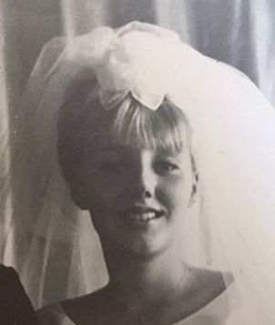

Kathleen Diane Hall b. 1947
Peter's mother.
Living. As for every living relative on this site, the birth date is given by year only, and no current address is shown.
Also recorded as Kathleen Diane Hall (married name Danenberg).
Kathleen Diane Hall was born in 1947 in Portland, Multnomah County, Oregon, United States2,3, the daughter of Charles Henry Hall and Estella May Alderson31,32,33. She married Peter Valentins Danenbergs on 23 Apr 1966 in Los Angeles, California, United States (according to an online family tree)34.
From her company-bio:Kathy Danenberg has been the Chief Executive Officer for Response Genetics, Inc. since 2002 . . . . While at USC, Kathy Danenberg invented a breakthrough patented method to extract RNA from formalin-fixed paraffin embedded tissue specimens which became the basis for the establishment of Response Genetics, Inc. Kathy Danenberg’s research on the kinetic mechanism of thymidylate synthase provided the rationale for use of the 5-FU-leucovorin combination in colorectal cancer.
Family
- Parents
- Charles Henry Hall 1920–2001 and Estella May Alderson 1916–2008 documented
- Husband
- Peter Valentins Danenbergs b. 1942 · married on 23 Apr 1966 in Los Angeles, California, United States34
- Children
- Liga Irene Danenberg b. 1966 documented
- Peter Charles Danenberg Jr. b. 1978 documented
Life events
| Event | Date | Place and details |
|---|---|---|
| Born | 1947 | Portland, Multnomah County, Oregon, United States2,3 |
| Lived | 6 Apr 1950 | Portland, Multnomah County, Oregon, United States4 |
| Lived | Jun 1950 | Portland, Multnomah County, Oregon, United States5 |
| Lived | bet 1966 and 1970 | Santa Barbara, California, United States6 |
| Married | 23 Apr 1966 | with Peter Valentins Danenbergs Los Angeles, California, United States According to an online family tree34 |
| Note | bet 1977 and 1978 | Los Angeles, California, United States She was publishing science with Peter from the 1970s, twenty years before she founded Response Genetics: Danenberg PV, Danenberg KD, "Inhibition of hexokinase by multisubstrate analogs", Biochimica et Biophysica Acta 473 (1977); and Danenberg PV, Danenberg KD, Biochemistry 17 (1978), 4018–4024.…20 |
| Work | bet 1985 and 2000 | Los Angeles, California, United States Laboratory Director, University of Southern California, 1985–2000 — fifteen years. In her own words: 'Development of advanced oncology laboratory testing. Managed lab operation for research grants, patents and publications.' This is the USC laboratory in which the FFPE RNA extraction method was…13 |
| Lived | 1 Jan 1988 | Pasadena, California, United States According to an online family tree7 |
| Note | bet 1988 and 2024 | 126 publications indexed in PubMed under 'Danenberg KD'. Response Genetics' 2008 proxy credits her with 'over 100 scientific publications'. Many are co-authored with her husband; the pair 'Danenberg, K., Danenberg, P.' is a standing citation in the quantitative-PCR literature.21 |
| Work | bet 1999 and 2011 | Los Angeles, California, United States Founder, director, and from 2002 Chief Executive Officer of Response Genetics, Inc., Los Angeles (NASDAQ: RGDX). Her own account of the arc: 'Founded Response Genetics, Inc. (RGI) in 1999 with private funding, and incorporated licensed technology we had developed at USC for isolation of RNA from…14 |
| Note | bet 1999 and 2000 | Los Angeles, California, United States The invention her career turns on. With her husband Peter V. Danenberg and Stephen (Steven) Swenson, she devised a way to get usable RNA out of formalin-fixed, paraffin-embedded tissue — the way hospital pathology archives store tumour samples. Until then RNA could only be had from fresh-frozen…22 |
| Note | bet 2000 and 2013 | 39 patent documents name her as inventor on Google Patents, across US, European, Australian, Japanese, New Zealand, Canadian, Hong Kong and Chinese filings. The granted US ones: US 6,518,416 B1 (RNA from FFPE tissue, Response Genetics, issued 11 Feb 2003); US 6,573,052 B2 and US 6,602,670 B2…23 |
| Note | 6 Jun 2007 | Los Angeles, California, United States Age 60 in the table of executive officers and directors of Response Genetics, Inc.'s IPO prospectus, dated 6 June 2007. That puts her birth between June 1946 and June 1947 and so agrees with the 1947 we already hold. It is the strongest public, legally-responsible statement of her age…24 |
| Lived | bet 2008 and 2012 | Altadena, California, United States8,9 |
| Note | 6 May 2008 | Named as husband and wife (joint owners of Response Genetics shares)25 |
| Note | 4 Feb 2011 | Los Angeles, California, United States Christine Meda was appointed President of Response Genetics effective 4 February 2011; Kathleen, who had held that title, continued as Chief Executive Officer. She signed the 8-K reporting it.26 |
| Note | 22 Jul 2011 | Los Angeles, California, United States She stepped down as CEO of Response Genetics on 22 July 2011 and the board appointed her 'Founder and Executive Scientific and Technology Officer', to go back to the science. The chairman, Kirk K. Calhoun: 'We are very grateful for Kathleen Danenberg's leadership and acknowledge her numerous…27 |
| Work | bet Oct 2011 and Aug 2012 | Arizona, United States Senior Vice President, Professional Affairs, Caris Life Sciences, Phoenix, Arizona, October 2011 – August 2012. Her description: 'Facilitator and Architect of a series of new oncology testing panels. Professional liaison to molecular biology industry leaders.'15 |
| Work | bet Aug 2012 and Nov 2014 | California, United States Consultant to Life Technologies, Foster City, California, August 2012 – November 2014: 'Led core team in validation and product development of molecular tests from FFPE tissue predictive of response to chemotherapy. DNA and RNA sequence analysis of certain FFPE tissues using PCR technology led to…16 |
| Work | bet Nov 2013 and Mar 2017 | Torrance, California, United States Her second company. Founder, President, CEO and Director of Liquid Genomics, Inc., founded November 2013 — 'a blood-based biomarker Company … molecular analysis of cell-free DNA and RNA biomarkers in the blood of cancer patients to assess resistance and sensitivity to targeted chemotherapies over…17 |
| Work | bet Mar 2017 and Jun 2021 | Culver City, California, United States Senior Vice President of Liquid Technologies, NantHealth, Inc., 9920 Jefferson Blvd., Culver City, California, March 2017 – June 2021. 'Upon the acquisition of Liquid Genomics by NantHealth, I led the team that transitioned Liquid Genomics' CAP/CLIA licensed lab from Torrance, CA to NantHealth's…18 |
| Work | bet Jun 2021 and 2026 | Los Angeles, California, United States Senior Project Management Consultant to Burning Rock Dx (Burning Rock Biotech, Guangzhou), from June 2021 and still current at the date of this research — she is in her eightieth year and still working in molecular oncology. It is the headline on her profile.19 |
| Note | bet 7 Jan 2025 and 8 Jan 2025 | Altadena, California, United States SHE AND PETER LOST THEIR ALTADENA HOUSE IN THE EATON FIRE of 7–8 January 2025 — [address omitted], the address on her own SEC filer record (CIK 0001401803) from 2007 to 2012 and in the family's MyHeritage data. Their daughter Līga set up a GoFundMe for them, "Help Danenberg's Rebuild after…28 |
| Lived | 2026 | Los Angeles, California, United States10 |
| Note | 2026 | How she describes her own working life, in her LinkedIn summary: 'Extensive global management experience and MDx development through long-term relationships with key oncology opinion leaders and their institutions… Established medical affairs personnel in the US, EU, Japan and China… Established a…29 |
| Lived | La Cañada Flintridge, California, United States According to an online family tree11 | |
| Education | Madison, Wisconsin, United States B.S. in biochemistry, University of Wisconsin–Madison. Her LinkedIn education section gives 'Bachelor of Science (BS), Biochemistry and Molecular Biology, University of Wisconsin-Madison' and it is her only listed degree; Response Genetics' proxy statement says the same in the formal register. No…12 | |
| Note | According to family memory30 |
Photographs



Records


Sources
- MyHeritage family tree 'Dzimta' of Peter's third cousin (his family site), member GEDCOM export of 26 Oct 2026, I500165 (person-6500165), GEDCOM lines 10189–10257.
NAME Kathleen Diane /Hall/ · _MARNM Danenberg
His record match: ASV Publisko Ierakstu Indekss, https://www.myheritage.lv/research/collection-10220/asv-publisko-ierakstu-indekss?itemId=745057547&action=showRecord: 'Kathleen D Danenberg'.
- Household of Charles H. Hall, Multnomah County, Oregon, June 1950 & MyHeritage birth record of Kathleen Diane Hall (1947).
Kathleen Diane /Hall/ (voronins-tree.ged): 1 BIRT / 2 DATE 1947 … Kathleen D. Hall (6KMM-J567): Race = W; Birth 1947 @ Oregon; Census June 1950 @ Multnomah, Multnomah, Oregon, United States; Residence 1949; RelationshipToHead=Daughter; Age=3
Born 1947 in Portland, Multnomah County, Oregon to Charles Henry Hall and Estella May Alderson (1947 in voronins-tree.ged); enumerated at age 3 (born in Oregon) with her parents and younger brother Steven C. Hall (age 0, born June 1949 in Oregon) in Multnomah County, Oregon in the June 1950 US census.
- MyHeritage family tree 'Dzimta' of Peter's third cousin (his family site), member GEDCOM export of 26 Oct 2026, I500165 (person-6500165), GEDCOM lines 10189–10257.
BIRT · 1947
His record match: ASV Publisko Ierakstu Indekss, https://www.myheritage.lv/research/collection-10220/asv-publisko-ierakstu-indekss?itemId=129366167&action=showRecord: 'Kathleen Diane Danenberg | Dzimšana: 1947'. His record match: Kalifornija Dzimšanas, 1905 - 1995, https://www.myheritage.lv/research/collection-10070/dzim%C5%A1anas-ieraksti?itemId=13985481&action=showRecord: 'Hall | Dzimums: Vīrietis | Dzimšana: 1978 - Los Angeles, California, USA | Mātes pirmslaulības uzvārds: Hall'.
- Kathleen D. Hall in household of Charles H. Hall, Multnomah, Multnomah, Oregon, United States, DigitalFilmNbr 108805908, ImageNbr 13, ImageFolder1950Census 43290879-Oregon-017326, SourcePageNbr 12, SourceLineNbr 17, HouseholdId 155.
Name: Kathleen D. Hall (Kathleen D Hall); RelationshipToHead: Daughter; Gender: Female; Race: W; Age: 3 / 3 years; MaritalStatus: Single; Birth: 1947, Oregon; Census: June 1950, Multnomah, Multnomah, Oregon, United States; SourcePageNbr: 12; SourceLineNbr: 17; HouseholdId: 155
Enumerated (original enumeration date 'Apri 6, 1950' (FamilySearch normalizes it to June 1950), house number [address omitted], ED 26-76) on sheet 12, line 17, household 155, as Daughter, Female, race W, age 3, Single, born c. 1947 in Oregon, in household of parents Charles H. Hall (29) and Steela M. Hall (33) and brother Steven C. Hall (0 days).
- Household of Charles H. Hall, Multnomah County, Oregon, June 1950 & MyHeritage birth record of Kathleen Diane Hall (1947).
Kathleen D. Hall: Birth 1947 @ Oregon; Census June 1950 @ Multnomah, Multnomah, Oregon, United States; RelationshipToHead=Daughter; Age=3
1950 US census, Multnomah County, Oregon: Kathleen D. Hall, age 3, born Oregon, living with her parents Charles H. Hall (29, diesel mechanic) and Steela M. Hall (33) and younger brother Steven C. Hall (born June 1949).
- Danenbergs, Pēteris Valentīns — UC Santa Barbara (1966–1970) & birth of Līga Irene Danenberg in Santa Barbara (1966).
Kalifornijas U Santa Barbarā pētn. asist. 1966-70 … un Kalifornijas U Santa Barbarā ar Dr. grādu bioorganiskajā ķīm. 1970 … Location: Los Angeles, California — Current city. Hometown: Santa Barbara, California. Birthday: [day omitted] … 1 NAME Liga Irene /Danenberg/ / 1 BIRT / 2 DATE 1966
Lived in Santa Barbara, California with her husband Peter Valentins Danenbergs during his doctoral studies in bioorganic chemistry at the University of California, Santa Barbara (1966–1970); their daughter Līga Irene Danenberg was born in Santa Barbara on 1966.
- MyHeritage family tree 'Dzimta' of Peter's third cousin (his family site), member GEDCOM export of 26 Oct 2026, I500165 (person-6500165), GEDCOM lines 10189–10257.
RESI · 1 JAN 1988 · [address omitted], Pasadena, California 91101-3903, USA
- EDGAR filer record and filing history, 2007–2012.
"name": "Danenberg Kathleen", "addresses": {"mailing": {"street1": "[address omitted]", "city": "ALTADENA", "stateOrCountry": "CA", "zipCode": "91001"}}
[address omitted], Altadena, California 91001 — the mailing address on her own SEC filer record as a reporting owner (CIK 0001401803, 'Danenberg Kathleen'), under which she filed Forms 3 and 4 and Schedules 13G between 2007 and 2012. The same street address is in the family's MyHeritage data as one of her residences.
- MyHeritage family tree 'Dzimta' of Peter's third cousin (his family site), member GEDCOM export of 26 Oct 2026, I500165 (person-6500165), GEDCOM lines 10189–10257.
RESI · [address omitted], Altadena, California 91001-1527, USA
- Kathleen Danenberg — Senior Project Management Consultant.
"location": "Los Angeles, California, United States" … "contact_info": {"emails": ["[email omitted]"]} … "is_verified": true
'Los Angeles, California, United States' is the location on her own LinkedIn profile, which LinkedIn marks verified. Published contact email on the profile: [email omitted] — the family's own domain, which is also where Peter's 2015 site lived.
- MyHeritage family tree 'Dzimta' of Peter's third cousin (his family site), member GEDCOM export of 26 Oct 2026, I500165 (person-6500165), GEDCOM lines 10189–10257.
RESI · [address omitted], La Canada, California 91011-3713, USA
- Directors and executive officers — Kathleen Danenberg.
Prior to her work at USC, Ms. Danenberg received her B.S. in biochemistry from the University of Wisconsin.
B.S. in biochemistry, University of Wisconsin–Madison. Her LinkedIn education section gives 'Bachelor of Science (BS), Biochemistry and Molecular Biology, University of Wisconsin-Madison' and it is her only listed degree; Response Genetics' proxy statement says the same in the formal register. No year is published on either. This is also where she and Peter V. Danenberg overlap: he was at the McArdle Laboratory and the Wisconsin Clinical Cancer Center in Madison 1970–76, and they married in Los Angeles in 1966, so she was most likely a Madison student in those years.
- Laboratory Director, University of Southern California.
University of Southern California — Laboratory Director — Greater Los Angeles — Jan 1985 – Jan 2000 — Development of advanced oncology laboratory testing. Managed lab operation for research grants, patents and publications.
Laboratory Director, University of Southern California, 1985–2000 — fifteen years. In her own words: 'Development of advanced oncology laboratory testing. Managed lab operation for research grants, patents and publications.' This is the USC laboratory in which the FFPE RNA extraction method was invented.
- President and CEO (Founder and Director), Response Genetics, Inc..
Founded Response Genetics, Inc.(RGI) in 1999 with private funding, and incorporated licensed technology we had developed at USC for isolation of RNA from FFPE tissue. … Led RGI to a revenue run rate of approximately $30M/yr and close to profitability.
Founder, director, and from 2002 Chief Executive Officer of Response Genetics, Inc., Los Angeles (NASDAQ: RGDX). Her own account of the arc: 'Founded Response Genetics, Inc. (RGI) in 1999 with private funding, and incorporated licensed technology we had developed at USC for isolation of RNA from FFPE tissue. Developed, branded, and commercialized molecular diagnostics tests (ResponseDX®). Led RGI to a revenue run rate of approximately $30M/yr and close to profitability.' Milestones she lists by year: 1999 first RT-PCR tests for genes tied to chemotherapy response; 2000 a pharma-service model, with contracts from Sanofi/Aventis, Eli Lilly, Taiho, Amgen, OSI, Pfizer and GSK; 2002 appointed CEO; 2007 the NASDAQ IPO; 2008 the ResponseDX panels and a national sales force; 2011 over 20,000 patient samples tested for GSK in the MAGE-A3 vaccine and MEK/BRAF melanoma trials. A global network of laboratories in the US, EU, Japan and China; labs in Los Angeles and Edinburgh. The formal record agrees: board member since March 2000, Vice President and Chief Scientific Officer December 2000 – December 2002, CEO and President from 2002.
- Senior Vice President, Professional Affairs — Caris Life Sciences.
Caris Life Sciences — Senior Vice President, Professional Affairs — Pheonix Arizona — Oct 2011 – Aug 2012
Senior Vice President, Professional Affairs, Caris Life Sciences, Phoenix, Arizona, October 2011 – August 2012. Her description: 'Facilitator and Architect of a series of new oncology testing panels. Professional liaison to molecular biology industry leaders.'
- Consultant — Life Technologies.
Life Technologies — Consultant — Foster City CA — Aug 2012 – Nov 2014
Consultant to Life Technologies, Foster City, California, August 2012 – November 2014: 'Led core team in validation and product development of molecular tests from FFPE tissue predictive of response to chemotherapy. DNA and RNA sequence analysis of certain FFPE tissues using PCR technology led to bridging and development of the Oncomine NGS panel.'
- President and CEO, Founder, Director — Liquid Genomics, Inc..
Liquid Genomics, Inc. a blood-based biomarker Company that was founded in November 2013. … Founded CLIA-registered lab in Torrance, CA. … European expansion: formed GmbH and leased lab in Berlin.
Her second company. Founder, President, CEO and Director of Liquid Genomics, Inc., founded November 2013 — 'a blood-based biomarker Company … molecular analysis of cell-free DNA and RNA biomarkers in the blood of cancer patients to assess resistance and sensitivity to targeted chemotherapies over time'. The milestones she lists: the first cell-free circulating tumour RNA extraction technology from ambient-temperature shipped blood; a patent filed on it; validated ctRNA and ctDNA assay panels; a CLIA-registered laboratory founded in Torrance, California; Medicare z-codes and a PTAN provider number; the Liquid GenomicsDx® tests for lung, colon, prostate and melanoma launched as an early-access programme; contracts with two large pharmaceutical companies; and a European arm — a GmbH formed and a laboratory leased in Berlin. The company was acquired by NantHealth in 2017.
- SVP of Liquid Technologies — NantHealth, Inc..
NantHealth, Inc. — SVP of LIquid Technologies — [address omitted] — Mar 2017 – Jun 2021
Senior Vice President of Liquid Technologies, NantHealth, Inc., 9920 Jefferson Blvd., Culver City, California, March 2017 – June 2021. 'Upon the acquisition of Liquid Genomics by NantHealth, I led the team that transitioned Liquid Genomics' CAP/CLIA licensed lab from Torrance, CA to NantHealth's premises in Culver City. We expanded the Liquid Biopsy commercial panel and participated in regulatory submissions… filed patents and reported results of initial clinical utility studies for our MDx tests at ASCO, IASLC, SABCS and ESMO through clinical investigators.'
- Senior Project Management Consultant — Burning Rock Dx.
"headline": "Senior Project Management Consultant" … Burning Rock Dx — Jun 2021 – Present
Senior Project Management Consultant to Burning Rock Dx (Burning Rock Biotech, Guangzhou), from June 2021 and still current at the date of this research — she is in her eightieth year and still working in molecular oncology. It is the headline on her profile.
- Inhibition of hexokinase by multisubstrate analogs.
Inhibition of hexokinase by multisubstrate analogs. Peter V. Danenberg, Kathleen D. Danenberg
She was publishing science with Peter from the 1970s, twenty years before she founded Response Genetics: Danenberg PV, Danenberg KD, "Inhibition of hexokinase by multisubstrate analogs", Biochimica et Biophysica Acta 473 (1977); and Danenberg PV, Danenberg KD, Biochemistry 17 (1978), 4018–4024. She is also thanked by name in his 1983 Journal of Biological Chemistry paper "for assistance with thymidine kinase assays". This matters for her biography: the company she built in 1999 rested on a quarter-century of her own bench work, not only his.
- 126 indexed publications.
"count":"126"
126 publications indexed in PubMed under 'Danenberg KD'. Response Genetics' 2008 proxy credits her with 'over 100 scientific publications'. Many are co-authored with her husband; the pair 'Danenberg, K., Danenberg, P.' is a standing citation in the quantitative-PCR literature.
- Extracting RNA from Formalin-Fixed Paraffin-Embedded Tissue — University of Southern California.
The method of extracting RNA from formalin-fixed paraffin-embedded tissues was developed in 2000 by University of Southern California researchers Kathleen Danenberg, Ph.D., Peter Danenberg, Ph.D. and Stephen Swenson, Ph.D. … Response Genetics, a biotechnology company in Los Angeles, holds the exclusive license and has invested approximately $13 million to further develop the process.
The invention her career turns on. With her husband Peter V. Danenberg and Stephen (Steven) Swenson, she devised a way to get usable RNA out of formalin-fixed, paraffin-embedded tissue — the way hospital pathology archives store tumour samples. Until then RNA could only be had from fresh-frozen tissue, so decades of archived tumours were genetically unreadable. USC licensed it exclusively to Response Genetics, which put about $13 million into developing it; partners included Hitachi, GlaxoSmithKline, Roche and Eli Lilly. AUTM, the technology-transfer association, chose it for its Better World Project in 2008 as an invention that changed practice. Patent priority 20 Dec 1999 / 1 Dec 2000.
- 39 patent documents.
"total_num_results": 39
39 patent documents name her as inventor on Google Patents, across US, European, Australian, Japanese, New Zealand, Canadian, Hong Kong and Chinese filings. The granted US ones: US 6,518,416 B1 (RNA from FFPE tissue, Response Genetics, issued 11 Feb 2003); US 6,573,052 B2 and US 6,602,670 B2 (chemotherapy regimen from ERCC1 expression, 2003); US 6,582,919 B2 (EGFR and HER2-neu gene expression, 2003); US 7,998,707 B2 (quantitative gene expression from fixed paraffin-embedded tissue, USC, 2011); US 7,919,280 B2 (DNA, RNA and protein isolation from FFPE tissue, with Peter V. Danenberg and Steven Swenson, USC, 2011); US 8,026,062 B2 (2011); US 8,323,890 B2 (high-throughput DNA methylation analysis, USC, 2012); US 8,586,311 B2 (ERCC1 and TS expression, 2013).
- Management — Executive Officers and Directors.
Name Age Position … Kathleen Danenberg 60 Director, Chief Executive Officer and President
Age 60 in the table of executive officers and directors of Response Genetics, Inc.'s IPO prospectus, dated 6 June 2007. That puts her birth between June 1946 and June 1947 and so agrees with the 1947 we already hold. It is the strongest public, legally-responsible statement of her age there is.
- 2008 proxy statement — Security Ownership of Certain Beneficial Owners and Management.
Includes of 426,108 shares of common stock jointly owned by Ms. Danenberg and her husband, Peter Danenberg.
'Includes of 426,108 shares of common stock jointly owned by Ms. Danenberg and her husband, Peter Danenberg' — Response Genetics' 2008 proxy, and again in 2011 ('Mrs. Danenberg and her husband, Peter Danenberg'). A sworn public statement that they are married and hold jointly, 42 and 45 years after the 23 April 1966 Los Angeles marriage already in the tree.
- Departure of Directors or Principal Officers; Appointment of Principal Officers.
Kathleen Danenberg, who previously held the position of President of the Company, will continue to act as Chief Executive Officer of the Company. … By: /s/ Kathleen Danenberg Name: Kathleen Danenberg Title: Chief Executive Officer
Christine Meda was appointed President of Response Genetics effective 4 February 2011; Kathleen, who had held that title, continued as Chief Executive Officer. She signed the 8-K reporting it.
- Response Genetics Announces Search for New CEO — Kathleen Danenberg to Continue as Founder and Executive Scientific and Technology Officer.
On July 22, 2011, Kathleen Danenberg stepped down from the position of CEO and was appointed by the Board of Directors to serve as Founder and Executive Scientific and Technology Officer of the Company to focus her attention on RGI's scientific research and development activities.
She stepped down as CEO of Response Genetics on 22 July 2011 and the board appointed her 'Founder and Executive Scientific and Technology Officer', to go back to the science. The chairman, Kirk K. Calhoun: 'We are very grateful for Kathleen Danenberg's leadership and acknowledge her numerous contributions to RGI starting from the beginning of the Company in 1999. Her patented research breakthroughs have been instrumental in making RGI what it is today.' She stood for re-election to the board that September.
- Līga Danenberg's GoFundMe post.
Hello friends, I created a GoFundMe to help my parents as they begin to rebuild after they lost their home in the Altadena fire. … GOFUNDME.COM — Donate to Help Danenberg's Rebuild after Lost Everything in Eaton Fire, organized by Liga Danenberg
SHE AND PETER LOST THEIR ALTADENA HOUSE IN THE EATON FIRE of 7–8 January 2025 — [address omitted], the address on her own SEC filer record (CIK 0001401803) from 2007 to 2012 and in the family's MyHeritage data. Their daughter Līga set up a GoFundMe for them, "Help Danenberg's Rebuild after Lost Everything in Eaton Fire", and posted it to her school alumni group in January 2025: "Hello friends, I created a GoFundMe to help my parents as they begin to rebuild after they lost their home in the Altadena fire. If you are able to contribute or share it would be greatly appreciated! Thank you so all much!" Seven reactions, one comment. The GoFundMe page itself is no longer in GoFundMe's search index and its URL is not exposed in the Facebook card; four guessed slugs returned 404 (logged in ../liga-irene-danenberg/raw/fetch-log.tsv).
- Kathleen Danenberg — summary.
Extensive global management experience and MDx development through long-term relationships with key oncology opinion leaders and their institutions
How she describes her own working life, in her LinkedIn summary: 'Extensive global management experience and MDx development through long-term relationships with key oncology opinion leaders and their institutions… Established medical affairs personnel in the US, EU, Japan and China… Established a world-wide network of regulatory compliant molecular diagnostic labs… Maintained a network of key opinion leaders globally in oncology, leading institutions, cooperative oncology groups, and medical societies while co-publishing scientific and clinical research. Presented frequently at oncology meetings, key medical institutions and pharma.' Her colleagues' endorsements are a portrait in themselves: oncology (30), molecular biology (22), biotechnology (18), cancer (12), clinical development (12), pharmaceutical industry (12), life sciences (11) — and the hand-written skills 'Entrepreneurship: Founder of Response Genetics, Inc' and 'Relationship Builiding with Key Opinion Leaders in Oncology' [sic].
- Peter, in conversation, 2026-10-29.
Mainly blue-collar and army dudes; had radiator shops
- Peter's tree, danenberg.sql, 2007–2015, parentages 48.
- Household of Charles H. Hall, Multnomah County, Oregon, June 1950 & MyHeritage birth record of Kathleen Diane Hall (1947).
Charles H. Hall (Head, W, M, 29, Married, Birth 1921 @ Washington, Deisel Mechanic) | Steela M. Hall (Wife, W, F, 33, Married, Birth 1917 @ Washington) | Kathleen D. Hall (Daughter, W, F, 3, Single, Birth 1947 @ Oregon) | Steven C. Hall (Son, W, M, 0, Birth 1949 @ Oregon)
father: Charles Henry Hall; mother: Estella May Alderson
- Obituary: Charles Henry Hall, 80, The Orange County Register (Santa Ana, California), 16 March 2001.
Charles Henry Hall, 80, of Newport Coast, a trucking maintenance manager, died March 9, 2001, of myasthenia gravis. Services have been held. Arrangements by Fairhaven Memorial Park & Mortuary, Santa Ana. Wife, Stella; daughters, Kathleen Danenberg, Susan Hall; sons, a DNA match, Dale, Charles, James; nine grandchildren.
father: Charles Henry Hall; mother: Estella May Alderson
- MyHeritage family tree 'Dzimta' of Peter's third cousin (his family site), member GEDCOM export of 26 Oct 2026, family F500069 (I500161 Peter Valentins Danenbergs × I500165 Kathleen Diane Hall).
MARR 23 APR 1966 Los Angeles, California, USA
His record match: Kalifornija, Laulības, 1960 - 1985, https://www.myheritage.lv/research/collection-10202/kalifornija-laul%C4%ABbas-1960-1985?itemId=810201&action=showRecord: 'Peter V Danenbergs un Kathleen D Hall | Laulības: 23. Apr 1966 - Los Angeles, California, USA | Vīrs: Peter V Danenbergs | Dzimšana: Apmēram 1943 | Vecums: 23 | Sieva: Kathleen D Hall | Dzimšana: Apmēram 1947 | Vecums: 19'